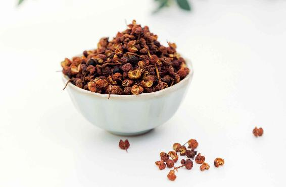

这是我多年前，为了方便读者朋友四季养生而编写的一首《四季五味养生歌》。其中，“夏吃辛，清肺金”是四季五味养生中的一个重要环节。
对于“夏吃辛”，很多朋友都很难理解这一点，觉得夏天这么热为什么适宜吃辛味食物呢？
其实，辛味和辣味不是等同关系，辛味不是辣味，但辣味属于辛味。
凡是能够发散出辛香味的食物都是辛味食物，比如，厨房里常见的带有麻味的花椒、辣味的生姜、葱、蒜、辣椒，还有一些香料及气味很独特的中药。
夏天的时候，适宜吃的辛味食物有两种：一种是辛温的；一种是辛凉的。
辛温的食物带有辛香的味道，并且是温性的，比如，姜就是典型的辛温食物。而跟姜相配的葱、蒜，也同样是辛温食物。还有花椒、胡椒、辣椒、大料，它们也都是辛温食物。
夏天天气虽然炎热，但人体并不是里外全是一片热象。夏天人体的皮肤热，但脾胃却相对比较虚寒，夏季吃一点辛温食物可以起到开胃、暖胃，促进脾胃功能的效果。因为辛味是发散的，所以它能够驱散脾胃里的寒气。
辛凉食物，如桑叶、薄荷、菊花、金银花，它们更多是用来泡茶饮，且都散发出一种辛凉的味道。它们可以发散风热、抗病毒，能帮助我们预防夏天的风热感冒、传染病、皮肤病，还可以解暑。
不管是辛凉食物还是辛温食物，它们的辛味，都有发散的功效。
在夏天，辛味食物的发散功效可以帮助身体祛除病邪，特别是在体表感受了风寒、风热等一些表邪后，它们能及时地把表邪驱散出去，使我们不容易感冒，也不容易得一些季节性的疾病。
如果风寒、风热这些表邪，没有被及时发散出去，等秋冬季到来后，人体毛孔闭合，它们就会逐渐往身体里面深入。一旦深入到身体里面，就不是表邪而是里邪了。这时候，它们就会盘踞在体内，变得非常顽固，很难清除了。慢慢地也就从季节性的疾病演变成了慢性、长期的疾病。

在夏天的时候，及时地用辛味食物把体表的病邪给发散出去是非常重要的，而且某些辛味食物还有一定的发汗作用，可以帮助人体散热。
当然，我们不可以盲目来发汗，夏天的天气本来就热，人体容易出汗，因此，我们要随着夏天的变化来选择让人体不同程度发汗的辛味食物。
初夏的时候，天气还不算很热，这时候人体出汗不多，我们需要帮助人体来出汗，所以要用到辛温食物，比如姜枣茶。
姜枣茶既可以让平时一些不爱出汗的，特别是寒湿重的朋友来适当地出汗，又不至于让人出汗太多，因为姜枣茶里的姜是带皮的。姜皮有止汗的作用，可以抑制姜肉的发汗作用，而且大枣也有止汗的作用。
长期待在空调房或者经常吹冷风的朋友，以及经常喝冰镇的啤酒、饮料的朋友，我建议您在夏天可以吃一些辛温食物来祛除体内的寒气。
有些朋友可能没怎么吹冷风，但是胃寒，也建议您吃花椒、胡椒、辣椒、大料等辛温食物，它们可以温暖人的脾胃。其他一些在夏天不怎么贪凉的朋友，您就可以少吃一些辛温食物，多吃一点辛凉食物。
小孩子往往都喜欢在户外运动，所以他们接收的阳气也是最多的。在夏天如果感受到风热，您要多给小孩子喝一些辛凉的茶饮，如金银花、薄荷。如果孩子有风热感冒的症状，再加上桑叶和菊花。
有些小孩子在三伏天眼睛会发红，也可以适当地加一些桑叶和菊花。这几种辛凉的茶饮，不仅可以预防感冒，还可以解暑，是在三伏天一家老小都可以喝的。
随着进入三伏天，人每天会出很多汗，这时候在饮食上，我们就要选用辛凉食物了。
辛凉食物也有发散的作用，但它不会让身体出很多的汗，比如桑叶的功效之一就是止汗，不是让人不出汗，而是止虚汗。
还有薄荷，是整个春夏我们都可以常吃的辛凉食物，当菜吃，泡水喝，都可以。它可以疏肝解郁，预防风热感冒，对于脂肪肝、血脂高的人尤其好。我也常建议朋友们在家里养点薄荷。薄荷很容易活，我家种了几年的野薄荷，每年快入夏时出苗，到七八月就会长得非常茂盛，每天采摘都吃不完。
夏天我建议大家要喝的解暑茶——银花甘草茶，用的金银花，也是有一点辛凉味，可帮助身体清肺火。
有些朋友以前夏天特别怕热非开空调不可，只要在暑天之前提前喝一段时间金银花，就会觉得夏天没有那么难熬了，甚至不开空调也能接受了。
辛凉食物还有助于预防夏天的传染病，比如金银花，抗病毒的作用就相当不错。
夏吃辛，清肺金。肺主皮毛，夏季如果有肺火，容易表现在皮肤上，皮肤发痒、一抓就红、起红疹、生痱子、长青春痘、日光性皮炎……这些都是夏季常见的皮肤病。
还有身体里如果有湿气、血毒，四季都容易反复发作慢性的皮肤病。
对此，辛味食物都可能帮得上忙。
如果体内寒湿比较重，慢性湿疹比较顽固，总是不好，或者经常在下巴长痘，那么可以试试辛温的姜枣茶。
如果皮肤由于热毒引起了皮炎，红肿痒痛，或者经常在鼻尖长痘，那么可以试试辛凉的银花甘草茶。
金银花善于治疗各种因热而起的肿毒和皮肤病。夏天日晒、过敏、湿疹，以及皮肤出现红肿、皮炎等问题，都能用上金银花。
十几岁正处于青春期的孩子长青春痘也可以喝。年轻人青春痘一般都长在脸颊或鼻子的位置上，这是由肺热引起的，而喝银花甘草茶可以清除肺热，从而消除青春痘。
金银花如果用于调理风热感冒、清热解暑，用量不需要很多。但调理皮肤问题，分量就要加倍，效果才好。可以用金银花30克、甘草30克煮水或泡饮。
古人用金银花治疗皮肤病，就强调由于金银花药性平和，用量加倍，才能达到化毒的效果。
“金银花，善于化毒，故治痈疽、肿毒、疮癣、杨梅、风湿诸毒，诚为要药。毒未成者能散，毒已成者能溃，但其性缓，用须倍加。”
——《本草正》
读者评论：
皮肤晒伤
珉珉：金银花甘草茶的好处我真是深有体会，儿子在外面跑得满脸通红的回来，我赶紧泡了杯浓点儿的金银花甘草茶给他喝，喝了两杯，半小时后红就退了。
嘴唇疱疹
佚名：前几天早晨起床眼睛眼角老有眼屎，嘴巴周围老是起泡，一个接一个还很疼，刚好看见陈老师分享的金银花甘草茶很符合这个症状。就抓了金银花和甘草，没想到喝了第一天嘴巴周围就不起泡了，外涂马齿苋精华，共两天，现在嘴巴基本好了。感恩陈老师！